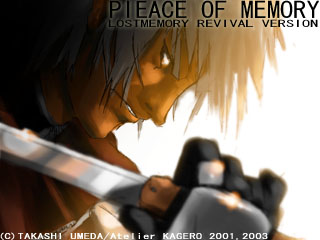

 |
PIEACE OF MEMORY LOSTMEMORY REVIVAL VERSION 簡易マニュアル |
■操作説明■ 決定・・・Z、Enter、スペース キャンセル、メニュー呼び出し・・・X、Ｅｓｃ キャラクター、カーソルの移動・・・矢印キー、テンキーの（2486） 表示の切り替え・・・4F ウィンドウ時にウィンドウサイズの切り替え・・・F5 強制的にタイトル画面へ移行（セーブはできません）・・・F12 強制終了・・・Alt+F4 白字で書かれた操作さえ覚えていただければプレー可能です。 またジョイスティックにも対応しています。 |
|
■メニュー画面■ SYSTEM アイテムを使用、セーブ、ゲームの終了をできる画面に移行します。 THINK 次にすべきことのヒントが得られます。 DICTIONARY ゲーム序盤で追加されるコマンドでゲーム中の用語等の詳しい説明が見れます。 |
|
■戦闘■ ATTACK 通常攻撃をします。 SKILL AP（下のゲージ）を消費して特殊攻撃を仕掛けます。 WAIT ターンを消費して全体量の1/6のAPを蓄えます。 詳しい説明は「メニュー画面→DICTIONARY」で受けることが可能です。 |
|
■攻略指南■ 一、無駄に敵と戦わない 敵と戦ってもメリットが余りありません。 フィールド上ではできるだけ敵を避けつつ進むことをお勧めします。 また敵の視野は前方に広く後方には狭いようです。 二、回復アイテムを温存する フィールドには薬草が自生していうことがあります。 みかけたらなるべく採るようにしましょう。 またタンスの中などに置いてあることもあります。 三、中盤以降はこまめに体力回復を 中盤以降では戦闘がきつくなります。 危ないかな、と感じたら迷わず回復することをお勧めします。 |
|
■ご意見、お問い合わせ■ アトリエ蜻蛉 URL：http://www2.fctv.ne.jp/~kagero/ MAIL：kagero@mx2.fctv.ne.jp |
|